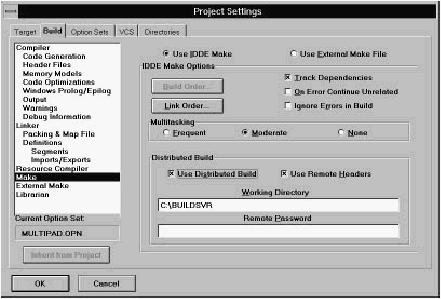
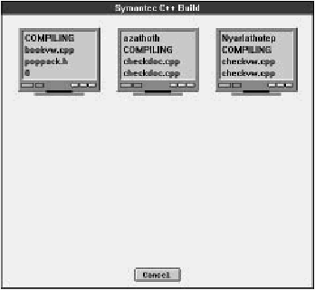
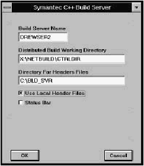
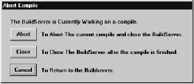

Home
| Search
| CTG
| RTL
| IDDE
| STL
Home
| Search
| CTG
| RTL
| IDDE
| STL
Last update Fri Apr 28 16:30:17 2006
|
Reference 1. Introducing Digital Mars C++ 2. Introducing the IDDE Part 2: Creating an Application with Digital Mars C++ 3. Starting a Project and Defining Workspaces 4. Generating an Application Framework 5. Defining Classes and Their Hierarchies 6. Editing Program Code 7. Adding Look and Feel with Resources 8. Testing an Application Part 3: Learning Digital Mars C++ by Example 9. Introduction to the Tutorial 10. Lesson 1: Create the DOS Application 11. Lesson 2: Generate an Application Framework 12. Lesson 3: Customize the Interface 13. Lesson 4: Add Messages with ClassExpress 14. Lesson 5: Add a Dialog Box with ClassExpress Part 4: More about Creating Programs 15. More about Projects and Workspaces 16. More about Project Build Settings 17. More about AppExpress 18. More about ClassExpress 19. Class Editor Reference 20. Hierarchy Editor Reference 21. Text Editor Reference 22. Using Version Control Part 5: More about Testing Programs 23. Controlling and Configuring the Debugger 24. Commands Available in Debugging Mode Part 6: About Managing Resources 25. ResourceStudio Resource Editor 26. Dialog Editor 27. Menu, Accelerator and String Table Editors 28. Bitmap, Cursor, Icon, and Font Editors 29. Version Information and Custom Resource Editors Part 7: Appendixes A. Expression Evaluation B. IDDE Settings and Command-Line Options C. Using NetBuild |
C. Using NetBuildNetBuild is a feature of Digital Mars C++ that lets you distribute the task of building a project across the network. Using NetBuild, you can employ any idle PCs on the network to compile your files.Before you can use NetBuild you must install the NetBuild Administrator software on your network server and the NetBuild Server software on any PCs that will participate in the distributed build. For information on how to install the NetBuild feature of Digital Mars C++, see the Getting Started Guide. The following sections detail how to use the Digital Mars C++ NetBuild feature. Using the Build ClientYour PC (the one controlling the build) is called the build client. Functioning as a client, it must request a server to perform a task. The PCs that compile your project are called build servers.Configuring the build clientThe options for controlling the NetBuild on the build client are located in the Project Settings dialog box. To access these options, select Settings from the IDDE's Project menu, then click on the Build tab to bring up the Build page of the Project Options dialog box. In the list of subpages on the left, choose Make.The Make subpage is shown in Figure C-1.  [Figure C-1 The Make subpage To turn on the NetBuild feature, make sure that the Use NetBuild check box has a check mark. If you enable the Use Remote Headers option, the client PC instructs the build servers to use the header files on their local drives (as opposed to getting the header files from the build client). This option can be overridden on the build server side by disabling the Use Local Headers option in the Build Server Configuration window. See "Configuring a build server," later in this chapter. When you enable the Use NetBuild option, you must specify the pathname of the build server control directory in the Working Directory textbox. This is the directory in which the NetBuild Administrator is installed on the network server. You specify this pathname in the Working Directory textbox. All the PCs participating in the distributed build must have access to this directory. If your network administrator has set up a network password, you must enter it in the Remote Password textbox. If sources are shared through Microsoft Network on a local hard disk, and a sharing password is used for access protection, it must be specified in the Remote Password textbox. Starting a distributed buildOnce you have configured the build client, every time you rebuild or update your project, the NetBuild system identifies the build server( s) that can participate in the distributed build. If there is at least one build server available, the distributed build can occur; otherwise the build client builds the project locally. For information on starting and configuring build servers, see the following section.When the distributed build process begins, the Build Client window opens on the client PC's screen (see Figure C-2). This window allows you to monitor the progress of the distributed build. When the build is done, a message specifying successful completion or an error condition is displayed in the output window on the build client. Monitoring a distributed buildYou can monitor a distributed build from the build client PC by viewing the messages displayed in the Build Client window. [Figure C-2 The Build Client window This window displays an icon each for the build client and each of the build servers participating in the distributed build. Each icon shows a list of the programs and header files being handled by that particular PC. The name of the build server is shown at the top of its icon. Stopping a distributed buildYou can cancel a build from the build client PC by:
Using a Build ServerA build server is a PC that is helping the build client PC compile a project. A build server normally is idle until a client requests it to perform a task. There must be at least one build server in the distributed build environment.Starting a build serverYou start the NetBuild Server application by double-clicking on its icon, or as you start any other Windows program. Once started, the server application is minimized into an icon. It then runs in the background, waiting to receive a task from a build client.Configuring a build serverWhen the build server compiles files, the build server application name changes to the name of the file it is compiling.Double-click on the NetBuild Server application icon to display a Build Server Configuration window (see Figure C-3).  [Figure C-3 The Build Server Configuration window This window displays the build server name, the pathname of the working directory, and the pathname of the directory containing the header files used in the compilation. (If the pathname of the working directory is changed, then the pathname must be identical in the client working directory.) This window also contains a message area; this is where messages, such as the name of the file being compiled, the file being read, and error messages, are displayed. If Use Local Header Files option is enabled, the build server looks for the header files in the "Directory for Header Files" specified in the build server window. If the Use Local Header Files option is not enabled, the build server gets the header files from the build client PC. This option is enabled if the Use Remote Headers option is enabled on the client PC; however, you can still force the build client to retrieve the headers from the build client by disabling the Use Local Header Files option in the Build Server Configuration window. Note: If Use Local Header Files is selected and the build server needs a header file and cannot find it, the build server sends the job back to the build client for processing. If the Status Bar option is selected, the status bar is displayed at the bottom of the Build Server Configuration window. Stopping a build serverYou can close the NetBuild Server application by:
 [Figure C-4 Abort Compile dialog box If you click on Cancel in the dialog box, the build server resumes processing. If you click on Close, the build server finishes processing any files that are in the queue (that is, files currently being compiled and files already read), then stops. If you click on Abort, the build server halts the current compilation and returns the uncompleted job to the build client. If you selected Close or Abort, the NetBuild Server application closes and you must restart it if you want the PC to be able to participate in a distributed build again. (See "Starting a build server," earlier in this chapter.) TroubleshootingIf the build client or build server seems to hang (because no messages are being displayed), wait for a few minutes. NetBuild tries to establish a connection several times before giving up.If both the build client and build server start, but the build server does not compile your program, then:
NetBuild MessagesThis section describes the NetBuild error and information messages.Build client messages
Build server messages
Network errors
|